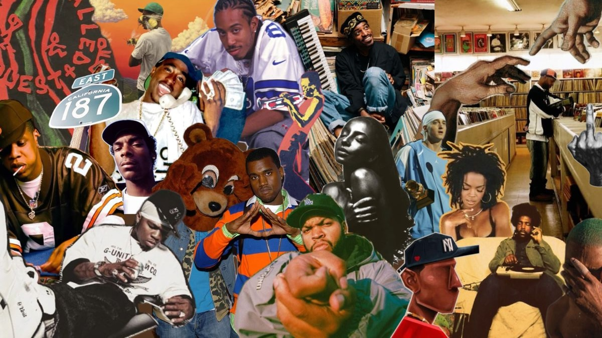

Laptop achtergrond
Persoonlijk / Collage
Mei 2025
Dit ontwerp maakte ik als persoonlijke achtergrond voor mijn laptop. Het is een collage die mijn interesses, inspiratiebronnen en visuele stijl als ontwerper weerspiegelt. Elk element in de compositie vertelt iets over mijn creatieve identiteit en de manier waarop ik naar vormgeving kijk.
Wanneer ik mijn laptop openklap, zie ik niet alleen een afbeelding, maar een samenvatting van mijn eigen esthetiek. Het ontwerp motiveert mij telkens opnieuw om met een frisse blik aan de slag te gaan en trouw te blijven aan mijn eigen stijl.